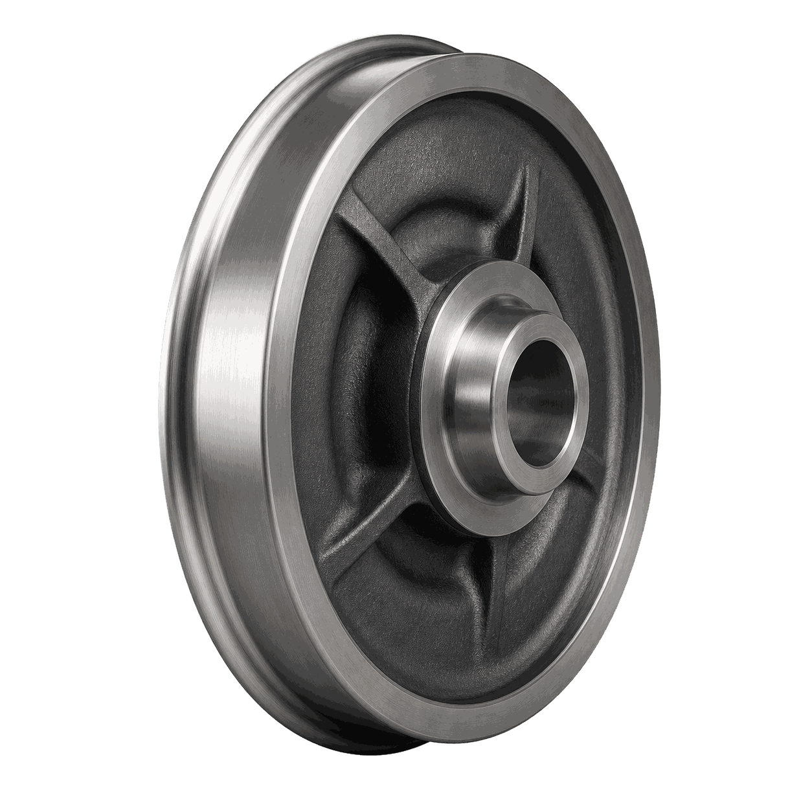

01
Карусельное точение
Обрабатывает крупные торцы, диаметры и посадочные зоны на жёсткой карусельной схеме.

Построить маршрут обработки детали «Бандаж колеса» с понятным разделением операций и подбором оборудования под каждую операцию.
Параметры ориентировочные. Финальная технология и состав оборудования уточняются по чертежу, материалу и программе выпуска.
Обрабатывает крупные торцы, диаметры и посадочные зоны на жёсткой карусельной схеме.